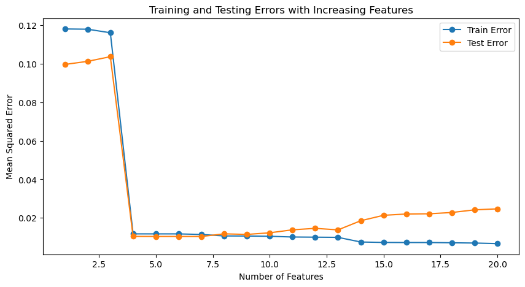

import numpy as np
import matplotlib.pyplot as plt
from sklearn.linear_model import LinearRegression
from sklearn.model_selection import train_test_split
from sklearn.metrics import mean_squared_error
# Seed for reproducibility
np.random.seed(0)
# Generate some data
n_samples = 100
n_features = 20
X = np.random.rand(n_samples, n_features)
i = 3 # true feature index
true_coeffs = np.zeros(n_features)
true_coeffs[i] = 1
noise = 0.1
y = X @ true_coeffs + np.random.randn(n_samples) * noise
X_train, X_test, y_train, y_test = train_test_split(X, y, test_size=0.5, random_state=42)
train_errors = []
test_errors = []
for i in range(1, n_features + 1):
model = LinearRegression()
model.fit(X_train[:, :i], y_train)
train_pred = model.predict(X_train[:, :i])
test_pred = model.predict(X_test[:, :i])
train_errors.append(mean_squared_error(y_train, train_pred))
test_errors.append(mean_squared_error(y_test, test_pred))
# Plot the results
plt.figure(figsize=(10, 5))
features_count = range(1, n_features + 1)
plt.plot(features_count, train_errors, label='Train Error', marker='o')
plt.plot(features_count, test_errors, label='Test Error', marker='o')
plt.title('Training and Testing Errors with Increasing Features')
plt.xlabel('Number of Features')
plt.ylabel('Mean Squared Error')
plt.legend()
plt.show()

from sklearn.datasets import load_wine
data = load_wine()
import pandas as pd
df = pd.DataFrame(data.data, columns=data.feature_names)
df
| alcohol | malic_acid | ash | alcalinity_of_ash | magnesium | total_phenols | flavanoids | nonflavanoid_phenols | proanthocyanins | color_intensity | hue | od280/od315_of_diluted_wines | proline | |
|---|---|---|---|---|---|---|---|---|---|---|---|---|---|
| 0 | 14.23 | 1.71 | 2.43 | 15.6 | 127.0 | 2.80 | 3.06 | 0.28 | 2.29 | 5.64 | 1.04 | 3.92 | 1065.0 |
| 1 | 13.20 | 1.78 | 2.14 | 11.2 | 100.0 | 2.65 | 2.76 | 0.26 | 1.28 | 4.38 | 1.05 | 3.40 | 1050.0 |
| 2 | 13.16 | 2.36 | 2.67 | 18.6 | 101.0 | 2.80 | 3.24 | 0.30 | 2.81 | 5.68 | 1.03 | 3.17 | 1185.0 |
| 3 | 14.37 | 1.95 | 2.50 | 16.8 | 113.0 | 3.85 | 3.49 | 0.24 | 2.18 | 7.80 | 0.86 | 3.45 | 1480.0 |
| 4 | 13.24 | 2.59 | 2.87 | 21.0 | 118.0 | 2.80 | 2.69 | 0.39 | 1.82 | 4.32 | 1.04 | 2.93 | 735.0 |
| ... | ... | ... | ... | ... | ... | ... | ... | ... | ... | ... | ... | ... | ... |
| 173 | 13.71 | 5.65 | 2.45 | 20.5 | 95.0 | 1.68 | 0.61 | 0.52 | 1.06 | 7.70 | 0.64 | 1.74 | 740.0 |
| 174 | 13.40 | 3.91 | 2.48 | 23.0 | 102.0 | 1.80 | 0.75 | 0.43 | 1.41 | 7.30 | 0.70 | 1.56 | 750.0 |
| 175 | 13.27 | 4.28 | 2.26 | 20.0 | 120.0 | 1.59 | 0.69 | 0.43 | 1.35 | 10.20 | 0.59 | 1.56 | 835.0 |
| 176 | 13.17 | 2.59 | 2.37 | 20.0 | 120.0 | 1.65 | 0.68 | 0.53 | 1.46 | 9.30 | 0.60 | 1.62 | 840.0 |
| 177 | 14.13 | 4.10 | 2.74 | 24.5 | 96.0 | 2.05 | 0.76 | 0.56 | 1.35 | 9.20 | 0.61 | 1.60 | 560.0 |
178 rows × 13 columns
df.describe()
| alcohol | malic_acid | ash | alcalinity_of_ash | magnesium | total_phenols | flavanoids | nonflavanoid_phenols | proanthocyanins | color_intensity | hue | od280/od315_of_diluted_wines | proline | |
|---|---|---|---|---|---|---|---|---|---|---|---|---|---|
| count | 178.000000 | 178.000000 | 178.000000 | 178.000000 | 178.000000 | 178.000000 | 178.000000 | 178.000000 | 178.000000 | 178.000000 | 178.000000 | 178.000000 | 178.000000 |
| mean | 13.000618 | 2.336348 | 2.366517 | 19.494944 | 99.741573 | 2.295112 | 2.029270 | 0.361854 | 1.590899 | 5.058090 | 0.957449 | 2.611685 | 746.893258 |
| std | 0.811827 | 1.117146 | 0.274344 | 3.339564 | 14.282484 | 0.625851 | 0.998859 | 0.124453 | 0.572359 | 2.318286 | 0.228572 | 0.709990 | 314.907474 |
| min | 11.030000 | 0.740000 | 1.360000 | 10.600000 | 70.000000 | 0.980000 | 0.340000 | 0.130000 | 0.410000 | 1.280000 | 0.480000 | 1.270000 | 278.000000 |
| 25% | 12.362500 | 1.602500 | 2.210000 | 17.200000 | 88.000000 | 1.742500 | 1.205000 | 0.270000 | 1.250000 | 3.220000 | 0.782500 | 1.937500 | 500.500000 |
| 50% | 13.050000 | 1.865000 | 2.360000 | 19.500000 | 98.000000 | 2.355000 | 2.135000 | 0.340000 | 1.555000 | 4.690000 | 0.965000 | 2.780000 | 673.500000 |
| 75% | 13.677500 | 3.082500 | 2.557500 | 21.500000 | 107.000000 | 2.800000 | 2.875000 | 0.437500 | 1.950000 | 6.200000 | 1.120000 | 3.170000 | 985.000000 |
| max | 14.830000 | 5.800000 | 3.230000 | 30.000000 | 162.000000 | 3.880000 | 5.080000 | 0.660000 | 3.580000 | 13.000000 | 1.710000 | 4.000000 | 1680.000000 |